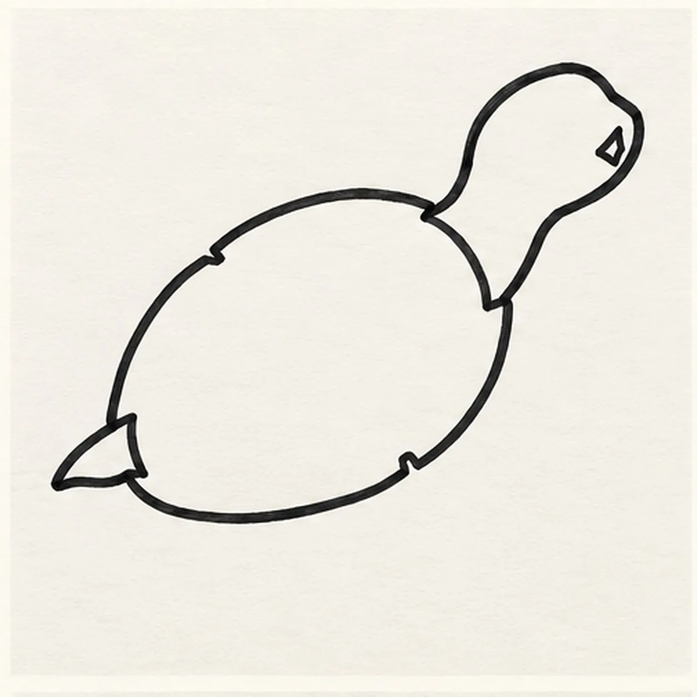
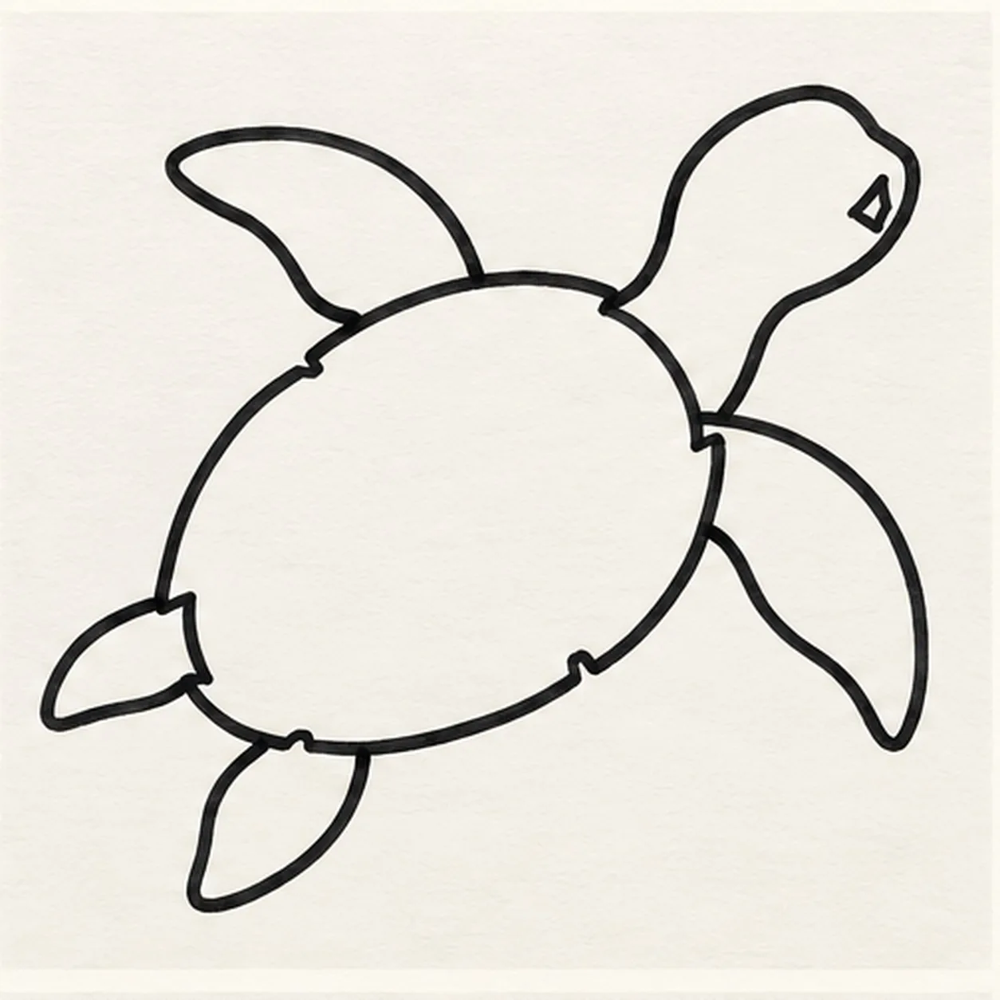
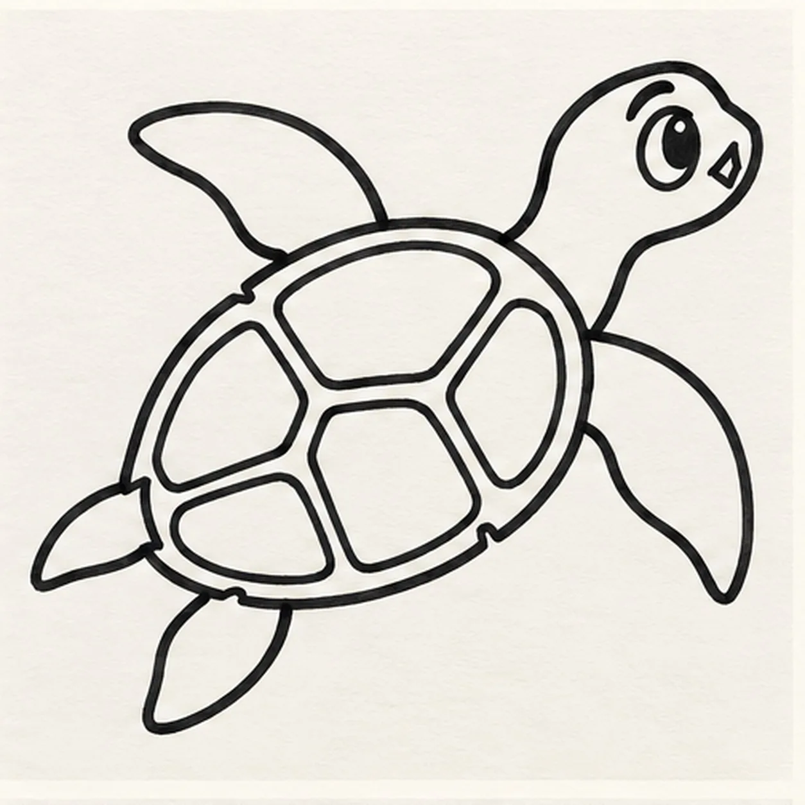
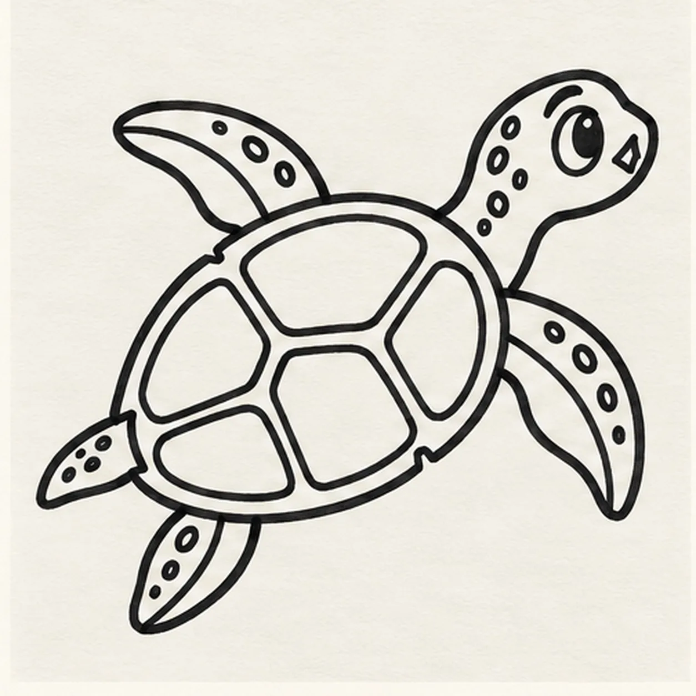
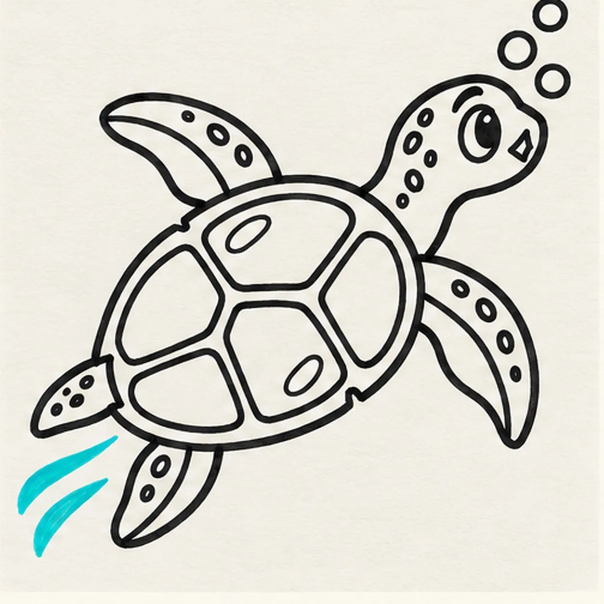

Felt-tip marker mode
Let's draw a sea turtle
Treat this as one playful practice round: sketch the idea loosely, simplify the shapes, then commit with confident marker outlines and bright fills.
-
01

Shape the shell and head
Draw one broad domed oval shell tilted slightly upward, leaving exactly four short gaps around its edge for the flippers. From the front opening, connect a curved neck to one small rounded head pointing toward the upper right, notch one tiny open diamond mouth into the face edge, and close the rear with one small pointed tail.
Marker tip: Keep the shell wide and the head small. Count four empty attachment gaps before closing the tail so each flipper has a clear final position.
-
02

Attach four flippers
At the four reserved shell gaps, attach exactly four separate tapered flippers: two broad front flippers and two shorter rear flippers. Keep every attachment visibly connected and leave the small tail unchanged.
Marker tip: Work one gap at a time and trace each flipper back into the shell edge. The two front flippers can sweep farther than the two rear ones.
-
03

Add the face and five scutes
Place one large almond eye on the visible side of the head with its pupil high and forward, then add one raised curved brow. Keep the tiny diamond mouth unchanged, echo the shell with one inner rim, and draw exactly five large curved scutes that fit together without crossing it.
Marker tip: Use the high pupil and lifted brow for a curious look. Count five separate shell compartments before moving on.
-
04

Build the turtle texture
Draw one curved seam inside each of the four flippers and scatter small round spots across the head, neck, and flippers. Keep the eye, mouth, inner rim, five scutes, tail, and every attachment clear.
Marker tip: Curve each seam with its flipper and vary the spot sizes. Leave open paper between spots so the teal fill will still read clearly.
-
05

Add bubbles and water motion
Draw exactly three round bubbles above the head, exactly two curved aqua water swooshes behind the rear flippers, and reserve exactly two small open-paper highlights inside the established shell. Change no turtle contour.
Marker tip: Group the bubbles as three different sizes and keep the two swooshes separate. Place one highlight high on the shell and one lower for an easy final count.
-
06
![Handmade felt-tip marker drawing of one cheerful cartoon sea turtle swimming toward the upper right with one teal head and curved neck, one tiny open coral diamond mouth, one large almond side eye with a high pupil, one raised curved brow, one domed shell with a deep-navy rim and exactly five large scutes colored coral and golden yellow, exactly four attached teal flippers with dark seams and navy spots, one small pointed tail, exactly three aqua bubbles, exactly two aqua water swooshes, exactly two open-paper shell highlights, thick imperfect black outlines, and visible directional marker texture](../assets/cartoon-sea-turtle-swimming-finished-v1.webp)
Color the swimming turtle
Fill the established skin with bright teal, the shell rim with deep navy, the five scutes with coral and golden yellow, and the spots with navy. Deepen the existing aqua bubbles and swooshes, leave both shell highlights open, and add no new contours.
Marker tip: Pull marker strokes along each flipper and shell compartment. Count four flippers, five scutes, three bubbles, two swooshes, and two highlights, then stop while the texture still looks handmade.
![Handmade face-free felt-tip marker drawing of one left-facing coral cartoon hair dryer with one long tapered housing, one teal nozzle ring, one attached teal slanted handle, one warm-yellow round rear intake containing exactly six deep-navy radial vent slots, exactly two warm-yellow handle controls, one deep-navy power cord attached at the handle base and curling once into one two-prong plug, exactly three deep-navy airflow swooshes, exactly two open-paper housing highlights, thick imperfect black outlines, visible marker streaks, and one broad broken deep-navy ground shadow](../assets/cartoon-hair-dryer-finished-v1.webp)
![Handmade felt-tip marker drawing of one seated warm-brown cartoon monkey holding exactly one golden-yellow banana with orange lower edge, one wide eye with a sideways pupil and white highlight, one crescent squint eye, one raised eyebrow, exactly two nostrils, one off-center grin with exactly two square teeth, exactly two round ears, one three-point hair tuft with small paper gaps, exactly two peach hands, exactly two bent legs with peach feet, one peach belly patch, one long brown tail curled into one open spiral, exactly three banana peel seams, thick imperfect black outlines, visible marker streaks, and one broad broken teal ground shadow](../assets/cartoon-monkey-with-a-banana-finished-v1.webp)
![Handmade face-free felt-tip marker drawing of one coral passenger airplane angled upward to the right with one long rounded fuselage, one broad teal near wing, one smaller warm-yellow far wing, one coral-and-teal engine pod, one teal tail fin, exactly two warm-yellow horizontal stabilizers, one deep-navy cockpit window group, exactly four deep-navy cabin windows, one coral door with one dark dot, exactly two pale-blue clouds, exactly two deep-navy motion dashes, exactly two open-paper highlights, thick imperfect black outlines, visible marker streaks, and one broken deep-navy shadow accent](../assets/cartoon-passenger-airplane-in-flight-finished-v1.webp)